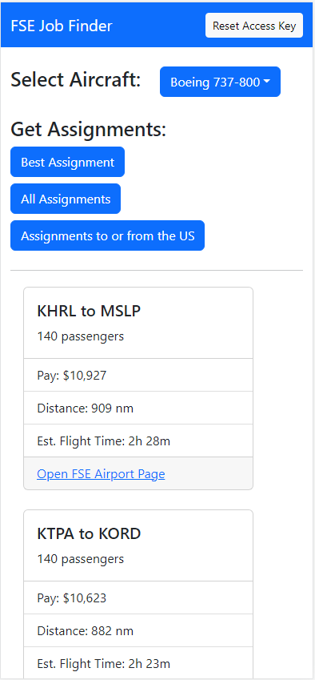
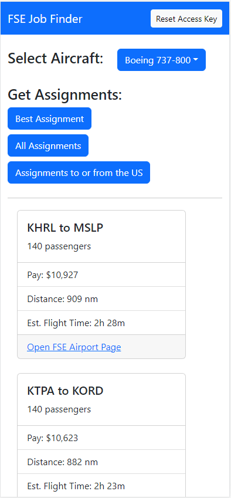

Projects
Below you will find a brief description of each project along with links to the source code. Above the screenshots are links that will take you to the applications so you can try them out.
Jump To
Yahtzee Scorecard Skull King Scorecard FSE Job FinderYahtzee Scorecard
This is a digital version of the scoresheet that each player uses to keep track of their score while palying Yahtzee. The scorecard automates the tallying up of the upper and lower sections as well as the overall score.
This is an all vanilla HTML/CSS/JS project and the source code can be found on Github here.
Go To Yahtzee Scorecard
Skull King Scorecard
Scorekeeping in Skull King was somewhat tedious when just using pen and paper as one person needed to write down multiple pieces of info for each player on each round. This combined with a number of different scoring rules depending on bids, tricks taken, and special cards meant it was easy to end up with small scoring errors at the end of a round. The scorecard here just needs a few taps each round from the scorekeeper to keep track of each player's bid, tricks taken, and any bonus points. Scores are then updated automatically when moving to the next round. The players can also use the app to see their opponents bid for the current round, everyones overall scores, as well as round by round score information.
The Skull King Scorecard was made using React for the front-end and ExpressJS for the backend. Source code for each is on Github. UX / API
Go To Skull King Scorecard{kind=link}
{kind=link}
{kind=link}
FSE Job Finder
FSE Job Finder is a tool that utilizes the API provided by FSEconomy to find available jobs in the FSE game world. To use the app, the user must have a FSEconomy account and they will also need to have their User Access Key. This key is used to authenticate requests made to the FSEconomy API. More info on what FSEconomy is and how it works can be found in the FSEconomy User Manual.
The front-end for FSE Job Finder was made using React and the back-end is an ASP.NET Web API. The api makes use of another project called FSEDataFeed that I had started working on last year. FSEDataFeed makes the calls to the FSEconomy Data Feeds API and processes aircraft and assignment information to build out the list of available flights in the game world for a given aircraft. As with the other projects, all source code is up on Github. UX / .NET Web API / FSEDataFeed
Go To FSE Job Finder 
